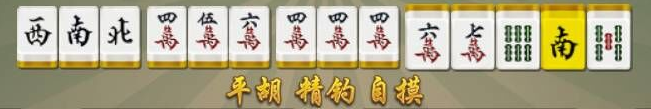
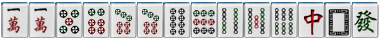
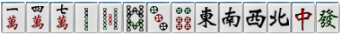

一、赣州冲关麻将规则
1.牌数; 冲关麻将使用麻将牌中全部条子、饼子、万子，东、南、西、北风，中、发、白，共136张牌,
2.出牌：逆时针出牌、可吃牌、碰牌、杠牌、字牌可吃
3.精牌
（1）分为上精和下精，上精可在胡牌时充当万能牌使用。下精仅为分使用，不能做万能牌
（2）精牌打出。导致吃、碰、杠、胡的玩家冲关，该玩家包赔上精分。其他分部影响
4.杠牌：
（1）明杠每人1分
（2）暗杠每人2分
（3）碰杠每人1分
二、术语解释
1. 埋雷：开局时，确定好的“下精牌”不翻开，直到结算时才亮出，并以当前玩家手中的牌持有的“下精牌”进行结算、计分，俗称：埋雷。
2.回头一笑：游戏发牌后，将上局的2张“上精牌”与当前发牌结果做一次精分结算。
3 .听牌： 冲关麻将没有听牌。
4.荒庄：
抓到剩海底的17墩牌时，还没人胡（杠后补完的墩也算），则为荒庄，荒庄要计算奖励分。荒庄时，每人手上都为13张牌。如果最后一张打出，有人吃、碰、杠，须等到拦牌的人打出一张，无人胡牌，则荒庄。
三、坐庄规则
1.通庄，不分庄闲，庄家输赢分数与闲家一样
2. 分庄闲 ，庄家输赢付2倍分
以上玩法自选3.点炮：点炮者付2倍分
4.弃胡：胡大不胡小，弃胡后，同一圈内科胡更大牌型，可以胡牌
5.结算：无一炮多响，牌局结束时（包括流局）。结算各家上精分、下精分、胡牌分、杠牌分、杠精分（杠精每人给10分）
四、胡牌类型
1.点炮（点炮者2番）
2.自摸（2番）
3.小七对（2番）
4.大七对（4番）
5十三烂（2番）
6.七星十三烂（4番）
7.德国（2番+5）
8.德中德（4番+5）
9.精钓（2番，必须自摸）
10.抢杠（2番，杠牌者包赔所有胡牌分）
11.杠开（2番）
12.天胡（32分）
13.地胡（32分）
五、特殊
1.德国 胡牌的人是德国（就是没有“精”胡牌）
2.德中德 胡牌的人是德国，另外3家手上或出的牌里也没有“精”，就叫德中德
3.手上有三手牌(顺子或刻)和一个或多个精的任意胡

4.十三烂： 手中十四张牌中，序数牌间隔大于2 ，字牌没有重复所组成的牌型：

5.七星十三烂： 手中十四张牌中，序数牌间隔大于2 ，字牌东西南北中发白各一张，且这几张牌不能用精牌来代替，组成的牌型
